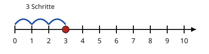

Das brauchst du hier
Mit einem KI-Tutor lernen
Ein KI-Tutor erklärt dir diese Seite und hilft dir bei den Aufgaben. Wähl deinen Assistenten:
Mit Claude öffnen Mit ChatGPT öffnen Mit Mistral Vibe öffnen
Du nutzt dein eigenes Konto beim Anbieter. Der Assistent ist kein Angebot von lernapps.net: lernapps liefert nur Inhalte und Aufgaben. Die Wahl gilt für alle Seiten, nur auf diesem Gerät.
Wofür diese Seite da ist
Im Kapitel „Punkte, Linien und Koordinaten“ gibst du Punkte mit Zahlen an. Dafür musst du Zahlen sicher lesen, schreiben und am Zahlenstrahl finden. Zwei Aufgaben zeigen dir, ob du bereit bist. Hast du beide richtig, kannst du gleich weiter.
Natürliche Zahlen im Stellenwertsystem

© CC-BY-4.0Die Zahl 3 liegt drei Schritte rechts von der 0.
Wenn du Punkte im Gitter angeben willst, musst du Zahlen sicher lesen und schreiben. Diese Wörter brauchst du dafür.
- natürliche Zahlen
Die Zahlen, mit denen du zählst: 0, 1, 2, 3 und so weiter. Jede ist um 1 größer als die davor. Zum Beispiel sind 7 und 305 natürliche Zahlen.
- Ziffer
Eins der zehn Zeichen 0 bis 9, aus denen du Zahlen schreibst. Die Zahl 305 besteht aus den Ziffern 3, 0 und 5.
- Zahlenstrahl
Eine Linie, die bei 0 beginnt und nach rechts weitergeht. Die Marken haben gleiche Abstände. Jede natürliche Zahl hat dort ihren Platz, und je weiter rechts sie liegt, desto größer ist sie.
- Stellenwert
Der Stellenwert ist der Wert einer Stelle: 1 bei den Einern, 10 bei den Zehnern, 100 bei den Hundertern, 1000 bei den Tausendern und so weiter. Eine Ziffer ist so viel wert wie die Ziffer mal der Stellenwert ihrer Stelle. In 305 ist die 3 an der Hunderterstelle 3 · 100 = 300 wert, die 5 ist 5 · 1 = 5 wert.
Die Zahl 305
Wenn du eine Zahl in ihre Stellen zerlegen willst, rechnest du so. 305 hat 3 Hunderter, 0 Zehner und 5 Einer. Du rechnest 3 · 100 + 0 · 10 + 5 · 1 = 305.
Aufgabe
Drei Beispielaufgaben, jede mit ihrer Lösung:
Aufgabe Nr. 1
Kannst du das? Du startest bei der 58 auf dem Zahlenstrahl und gehst 36 Schritte nach rechts. Bei welcher Zahl landest du?
Tipp
Zerlege 36 in Zehner und Einer. Gehe erst die Zehner nach rechts, dann die Einer.
Lösung
- Nach rechts werden die Zahlen größer, also rechnest du 58 + 36.
- 58 + 36 = 94.
Richtige Antwort: 94
Aufgabe Nr. 2
Kannst du das? Du startest bei der 67 auf dem Zahlenstrahl und gehst 30 Schritte nach rechts. Bei welcher Zahl landest du?
Tipp
Zerlege 30 in Zehner und Einer. Gehe erst die Zehner nach rechts, dann die Einer.
Lösung
- Nach rechts werden die Zahlen größer, also rechnest du 67 + 30.
- 67 + 30 = 97.
Richtige Antwort: 97
Aufgabe Nr. 3
Kannst du das? Du startest bei der 64 auf dem Zahlenstrahl und gehst 38 Schritte nach rechts. Bei welcher Zahl landest du?
Tipp
Zerlege 38 in Zehner und Einer. Gehe erst die Zehner nach rechts, dann die Einer.
Lösung
- Nach rechts werden die Zahlen größer, also rechnest du 64 + 38.
- 64 + 38 = 102.
Richtige Antwort: 102
Aufgabe
Drei Beispielaufgaben, jede mit ihrer Lösung:
Aufgabe Nr. 1
Kannst du das? Welche Zahl hat 7 Tausender, 0 Hunderter, 6 Zehner und 7 Einer?
Tipp
Schreibe die Ziffern von links nach rechts: Tausender, Hunderter, Zehner, Einer. Für die Hunderter schreibst du eine 0.
Lösung
- 7 Tausender sind 7 · 1000, 0 Hunderter sind 0, 6 Zehner sind 6 · 10, 7 Einer sind 7.
- Zusammen: 7067.
Richtige Antwort: 7067
Aufgabe Nr. 2
Kannst du das? Welche Zahl hat 3 Tausender, 0 Hunderter, 4 Zehner und 7 Einer?
Tipp
Schreibe die Ziffern von links nach rechts: Tausender, Hunderter, Zehner, Einer. Für die Hunderter schreibst du eine 0.
Lösung
- 3 Tausender sind 3 · 1000, 0 Hunderter sind 0, 4 Zehner sind 4 · 10, 7 Einer sind 7.
- Zusammen: 3047.
Richtige Antwort: 3047
Aufgabe Nr. 3
Kannst du das? Welche Zahl hat 4 Tausender, 0 Hunderter, 8 Zehner und 8 Einer?
Tipp
Schreibe die Ziffern von links nach rechts: Tausender, Hunderter, Zehner, Einer. Für die Hunderter schreibst du eine 0.
Lösung
- 4 Tausender sind 4 · 1000, 0 Hunderter sind 0, 8 Zehner sind 8 · 10, 8 Einer sind 8.
- Zusammen: 4088.
Richtige Antwort: 4088
Hast du beide Aufgaben richtig, bist du bereit. Klappt eine Aufgabe nicht, lies den Abschnitt oben noch einmal. Mehr dazu steht beim Baustein Natürliche Zahlen im Stellenwertsystem auf der Lernlandkarte von lernapps.net.
Du bist bereit, wenn du …
Die Lernlandkarte nennt als Ziel: Ich kann natürliche Zahlen im Stellenwertsystem lesen, schreiben und darstellen. Für dieses Kapitel genügt davon, dass du
- eine Zahl wie 3 oder 7 am Zahlenstrahl findest und von ihr aus nach rechts weitergehst,
- erklärst, was eine Ziffer an ihrer Stelle wert ist, und
- eine Zahl aus Hundertern, Zehnern und Einern aufschreibst.
Fehler gefunden oder eine Idee für diese App?